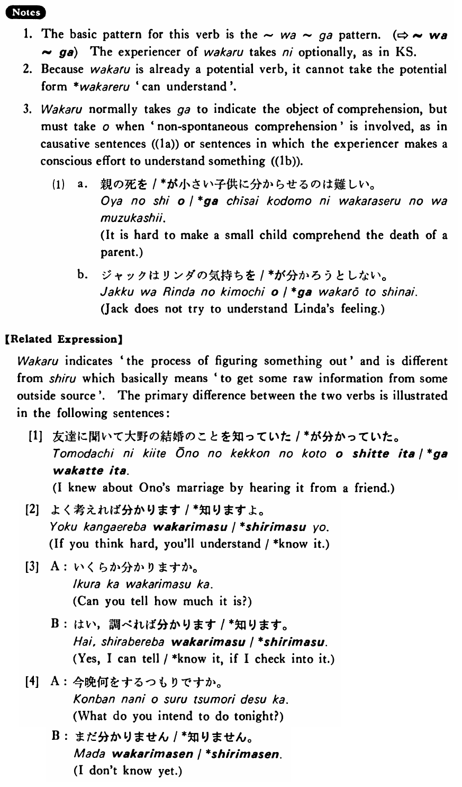

分かる・わかる (B. 529)
- (ks).
- 私（に）はこの言葉が分からない・分かりません。
- To me this word is not comprehensible. / I don’t understand this word.
- (a).
- 私にはこの映画の意味が分からない。
- I don't understand the meaning of this movie.
- (b).
- この問題は難しくて分からない。
- This problem is too difficult to understand.
- (c).
- 明日までにこの仕事が出来るかどうか分かりません。
- I can't tell if I can finish this work by tomorrow.
- (d).
- A:田中さんを知っていますか。 B:ええ、知っていますが、あの人はどうもよく分かりません。
- A: Do you know Mr. Tanaka? B: Yes, I know him, but he is somehow incomprehensible to me.
